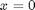

Mesh transform
This tutorial describes how to apply simple geometrical mesh transformations with the toolbox NIHU.
Contents
Translate
Meshes can be translated using the toolbox function translate_mesh by defining the translation vector . In the following example, a sphere mesh is created and translated from the origin to a given location.
sphere = create_sphere_boundary(1, 10);
d = [1 1 1]; % translation vector
sphere = translate_mesh(sphere, d);
Scale
Meshes can be scaled using the toolbox function scale_mesh by defining the scaling parameter. In the following example, a unit sphere surface is magnified to a larger radius.
sphere = create_sphere_boundary(1, 10); scale = 5; sphere1 = scale_mesh(sphere, scale);
Meshes can be scaled without keepeng the aspect ratio, by defining the scaling parameters separately along the , and axes. In the following example, a unit sphere is generated and is scaled to an ellipse
scale = [2 3 4]; ellipse = scale_mesh(sphere, scale); figure; subplot(1,2,1); plot_mesh(sphere1); subplot(1,2,2); plot_mesh(ellipse);
Rotate
Meshes can be rotated around a given vector of rotation, using the toolbox function rotate_mesh. In the present example, a line model is rotated around the axis by an angle of .
lin = create_line([1 0 0;1 1 0], 10); % create a line to rotatae
lin2 = rotate_mesh(lin, pi/3, [0 0 1]);
figure;
plot_mesh(lin);
plot_mesh(lin2);
Reflect
Meshes can be reflected to a symmetry plane using the toolbox function reflect_mesh. The present example reflects a straight line to the  plane.
lin = create_line([1 0 0; 2 1 0], 5); lin2 = reflect_mesh(lin, [1 0 0]); figure; plot_mesh(lin); plot_mesh(lin2);
Extrude
Extrusions are performed by the function extrude_mesh can be used to
- Extrude 1D meshes to 2D surfaces
- Extrude 2D surfaces to volumes.
In the present example, a circle quadrant is extruded into a circular bar volume. The extrusion is governed by an extrusion direction vector and the number of repetitions .
circle = create_circle_quadrant(1, 5); bar = extrude_mesh(circle, [0 0 .2], 10);
Similarly, 1D objects can be extruded to 2D surfaces as follows:
line = create_line(1, 10); slab = extrude_mesh(line, [.1 .05 0], 10); figure; subplot(1,2,1); plot_mesh(bar); subplot(1,2,2); plot_mesh(slab);
Revolve
Meshes can be revolved using the toolbox function revolve_mesh.
Revolution can be used to
- create surface meshes from line meshes
- and to create 3D volume meshes from surface meshes.
In the present example, a line is revolved in order to form an annular ring. The revolution is governed by the rotation vector, the rotation angle of a rotation segment and the number of rotation repetitions.
lin = create_line(1, 10); base = [-1 0 0]; % base of rotation vector dir = [0 0 1]; % direction of rotation vector dphi = pi/50; % amount of a rotation segment nPhi = 20; % number of repetitions ring = revolve_mesh(lin, dphi, nPhi, dir, base);
In the next example, a slab is revolved in order to form a cylindrical annular solid volume.
slab = create_slab([1 1], [10 10]);
dir = [0 -1 0]; % direction of rotation vector
solid = revolve_mesh(slab, dphi, nPhi, dir, base);
figure;
subplot(1,2,1); plot_mesh(ring);
subplot(1,2,2); plot_mesh(solid);
Repeat
Meshes can be repeated using the toolbox function repeat_mesh. In the example, a cat's eye will be repeated along two coordinate directions.
cat = create_catseye(1, 10); dir1 = [5 0 1]; % direction of repetition in the first direction n1 = 3; % number of repetitions dir2 = [0 3 1]; % direction of repetition in the second direction n2 = 5; % number of repetitions cat = repeat_mesh(cat, dir1, n1); cat = repeat_mesh(cat, dir2, n2); figure; plot_mesh(cat); view([100 25]);